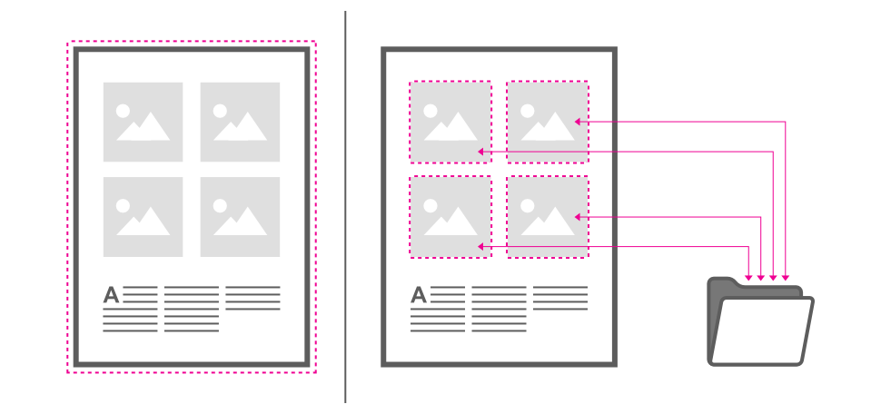

When placing content you have control over whether files are embedded within the document or linked from their original disk locations.

A copy of the original file is embedded into the document. As a result, there is no means of checking if the original file is modified at a later date, but the file will be kept with the document when it is moved.
Instead of embedding, a link is created between the document and the file on disk to allow it to update (via Resource Manager) if changed on disk. The linked file is never stored in the document.
If one or more linked files have been moved or renamed since you last opened your document, you'll be prompted to locate the file the next time the document is opened.
Embedding resources means the document is portable at the expense of a greater file size—all the resources are stored in the document. Linked resources give a much smaller document file size as only link information is stored.
You can change the policy at any time via File>Document Setup.